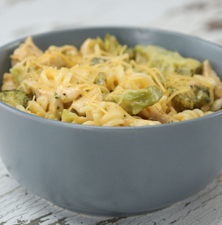

One-Pot Broccoli Cheddar Chicken Pasta

Description
This is a pasta dish that is very easy to make. You will only need one pot and some common ingredients,
so it's perfect for anybody who's busy. It's savory, creamy, and sure to be one of your favorites!
This dish is a good source of meat, vegetables, dairy, and grain.
Ingredients
- 2 tablespoons vegetable oil
- 3 cups broccoli, cut into small florets
- 1 ½ pounds of chicken breast, cubed
- 16 ounces shredded sharp cheddar cheese, divided
- 32 ounces dry rotini pasta
- 64 ounces chicken broth
- 8 ounces heavy cream
- 1 teaspoon garlic powder
- Salt
- Pepper
Steps
- In a large saucepan, heat vegetable oil over medium heat. Add chicken and cook through.
- Add broccoli, dry pasta, chicken broth, and cream.
- Stir to combine and bring to a boil. Reduce to a simmer and cover. Cook 15 minutes or until pasta is al dente.
- Add 12 ounces cheddar cheese (reserving 4 ounces), garlic powder, and salt to taste. Stir to combine and cook an
additional 3-4 minutes.
- Remove from heat and spoon into individual serving bowls. Top with remaining cheddar cheese.